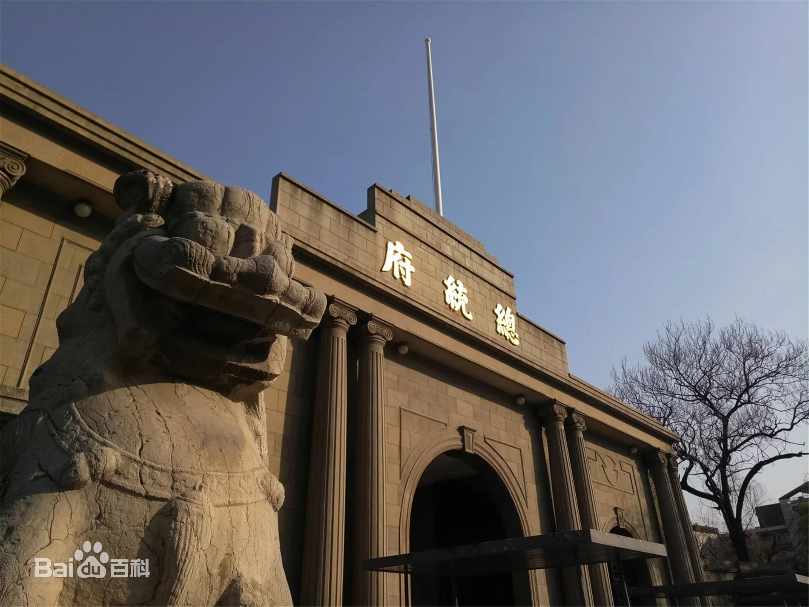
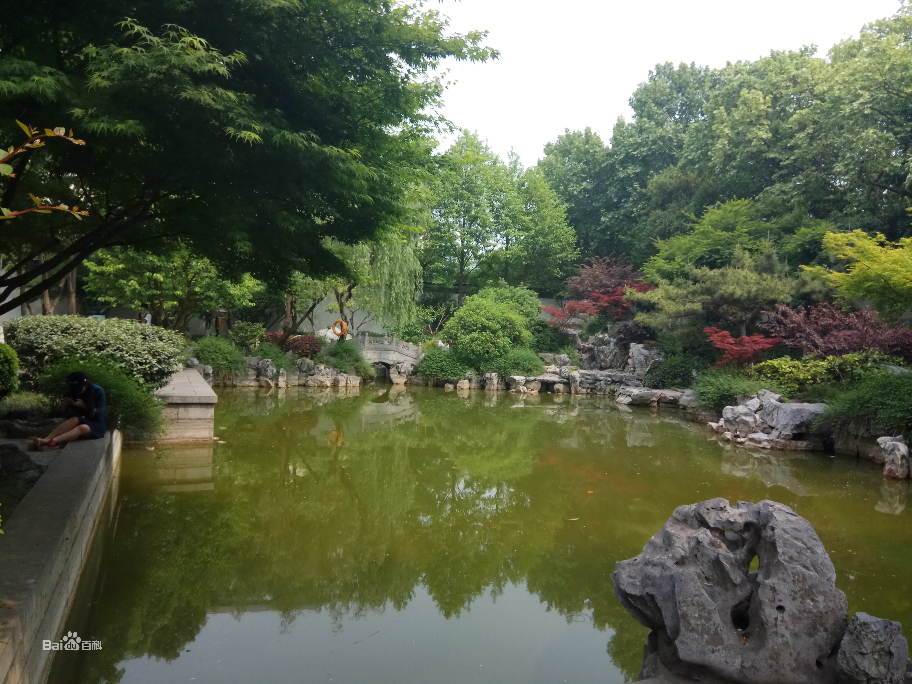
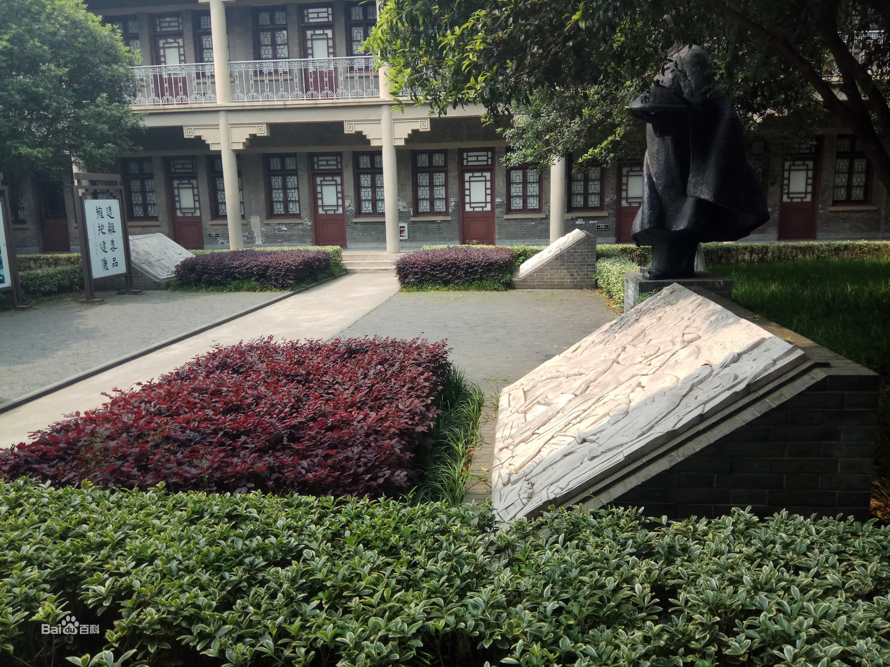
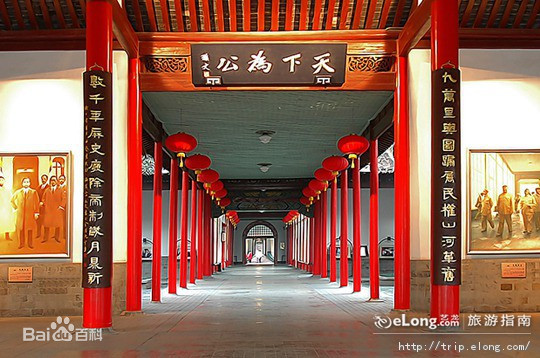
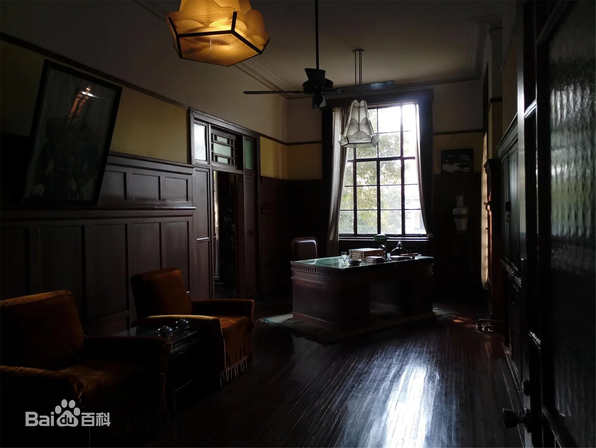

- 
- 
- 
- 
- 
总统府
简介
成人票：30元/人；学生票：25元/人；儿童票：20元/人


南京总统府位于南京市玄武区长江路292号，是中国近代建筑遗存中规模最大、保存最完整的建筑群，也是南京民国建筑的主要代表之一，中国近代历史的重要遗址。南京 总统府自近代以来，多次成为中国政治军事的中枢、重大事件的策源地，中国一系列重大事件或在这里发生，或与这里密切相关，许多重要人物都在此活动过。
南京总统府至今已有600多年的历史，可追溯到明初的归德侯府和汉王府；清代被辟为江宁织造署、两江总督署等，康熙、乾隆南巡均以此为行宫；太平天国定都天京后， 在此兴建规模宏大的天王府；1912年1月1日，孙中山在此宣誓就职中华民国临时大总统，辟为大总统府，后为南京国民政府总统府。
1982年2月，总统府内“太平天国天王府遗址”被国务院公布为全国重点文物保护单位；1998年，辟为中国近代史博物馆；2004年，被列为国家AAAA级旅游景区；201 6年9月，入选“首批中国20世纪建筑遗产”名录。
历史背景
1911年10月辛亥革命爆发后，1912年1月1日，孙中山在此处宣誓就任中华民国临时大总统，并组建了中国历史上第一个共和制的国家政权 —— 中华民国临时政府。1912年4月，临时政府结束，在这里成立了以黄兴为留守的南京留守府
1913年至1927年，这里先后成为江苏都督府、江苏督军署、江苏将军府、江苏督办公署、副总统府、宣抚使署、五省联军总司令部、直鲁联军联合办事处等机构。军政主官有程德全、张勋、李纯、齐燮元、卢永祥、冯国璋、孙传芳、杨宇霆、张宗昌等人。
1927年4月南京国民政府成立后不久，即于9月移驻这里办公。1928年10月，国民政府实行"五院制"，辟国民政府东院（东花园）为行政院办公处 ，国府西院（西花园）为国民政府参谋本部和主计处。
1937年12月南京沦陷后，国民政府先后成为日军第16师团部和伪维新政府行政院，以及汪伪政府的立法院、监察院和考试院；国府东院成为伪交通部、铁道部等机构；国府西院成为伪军事参议院
1949年4月23日南京解放，24日，中国人民解放军占领总统府。从此，揭开了中国历史新的一页。
建筑布局
自明初以来，总统府多有更迭，历经明、清、太平天国和中华民国等时代。在明代，这里是汉王府；清代设两江总督衙门于此，是清政府统治东南地区的中心。乾隆时期，这里曾为南巡行宫；太平天国时改为天朝宫殿；清朝后期，曾国藩沿袭咸丰三年前的旧督署规模及布局进行改建，仍为两江总督府。1912年，孙中山就任临时大总统，总统府就设在这里的西花园；1928年，这里又成了国民政府所在地；1948年5月，蒋介石在此就任"总统"。
总统府照壁前有一汉白玉石碑，碑上道劲有力的行书"太平天国起义百年纪念碑"是郭沫若先生所题。这是1951年为纪念太平天国广西金田村起义100周年而立的，纪念碑两侧为高大的雪松。

这座西洋古典式大门建于1929年。原先，门是木结构传统衙署前的辕门，后嫌其气势不足而改建。门楼仿古罗马风格，有八根圆柱。这是一座两层半的建筑，一楼为门房、卫士室，二楼为卫兵宿舍，楼顶为升旗平台。1948前，门前正中悬挂"国民政府"大字横匾。1948年后改用木制包金箔的"总统府"三个大字，1949年人民解放军攻占南京后被摘下。
大门，两侧是类似朝房式的办公室，中间为一个花草繁茂的院落。大门正对面是大堂，也就是我们说的太平天国天王府金龙殿旧址。天朝时这里是"真神金龙殿 "，又称"荣光大殿"。当年，大殿梁栋涂金，饰以龙凤，四壁彩绘，极其富丽堂皇，是洪秀全大朝之地，曾国荃攻陷天京，大肆掠夺后，火烧天王府，但此殿却奇迹般地保全下来。后曾国荃下令揭去红黄墙瓦，剥去泥金盘龙和木雕，将其翻盖为两江总督署的大堂。民国时，这敞开的大堂是举行重大礼仪活动的场所。大堂内正梁上悬挂孙中山手书的"天下为公"红底黑字匾。